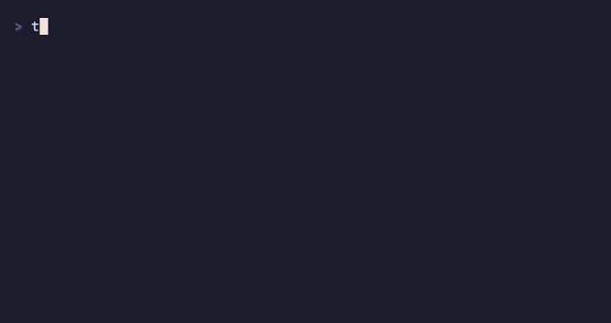

- Multiple lists and keyboard navigation.
- Markdown notes with a built-in editor.
- Optional database and list encryption.
- JSON export and a scriptable CLI.


- install (uv)
-
uv tool install td-task - or pip
-
pip install td-task - run
-
td - or uvx
-
uvx td-task
Python 3.14+. uv docs.